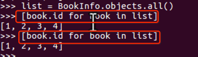
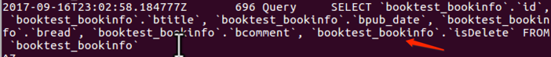

查询集
查询集表示从数据库中获取的对象集合，在管理器上调用某些过滤器方法会返回查询集，查询集可以含有零个、一个或多个过滤器。过滤器基于所给的参数限制查询的结果，从Sql的角度，查询集和select语句等价，过滤器像where和limit子句。
返回查询集的过滤器如下：
- all()：返回所有数据。
- filter()：返回满足条件的数据。
- exclude()：返回满足条件之外的数据，相当于sql语句中where部分的not关键字。
- order_by()：对结果进行排序。
返回单个值的过滤器如下：
- get()：返回单个满足条件的对象
- 如果未找到会引发"模型类.DoesNotExist"异常。
- 如果多条被返回，会引发"模型类.MultipleObjectsReturned"异常。
- count()：返回当前查询结果的总条数。
- aggregate()：聚合，返回一个字典。
判断某一个查询集中是否有数据：
- exists()：判断查询集中是否有数据，如果有则返回True，没有则返回False。
两大特性
- 惰性执行：创建查询集不会访问数据库，直到调用数据时，才会访问数据库，调用数据的情况包括迭代、序列化、与if合用。
- 缓存：使用同一个查询集，第一次使用时会发生数据库的查询，然后把结果缓存下来，再次使用这个查询集时会使用缓存的数据。
示例：查询所有，编辑booktest/views.py的index视图，运行查看。
list=BookInfo.objects.all()

查询集的缓存
每个查询集都包含一个缓存来最小化对数据库的访问。
在新建的查询集中，缓存为空，首次对查询集求值时，会发生数据库查询，django会将查询的结果存在查询集的缓存中，并返回请求的结果，接下来对查询集求值将重用缓存中的结果。
演示：运行项目shell。
python manage.py shell
情况一：如下是两个查询集，无法重用缓存，每次查询都会与数据库进行一次交互，增加了数据库的负载。
from booktest.models import BookInfo
[book.id for book in BookInfo.objects.all()]
[book.id for book in BookInfo.objects.all()]


情况二：经过存储后，可以重用查询集，第二次使用缓存中的数据。
list=BookInfo.objects.all()
[book.id for book in list]
[book.id for book in list]


限制查询集
可以对查询集进行取下标或切片操作，等同于sql中的limit和offset子句。
注意：不支持负数索引。
对查询集进行切片后返回一个新的查询集，不会立即执行查询。
如果获取一个对象，直接使用[0]，等同于[0:1].get()，但是如果没有数据，[0]引发IndexError异常，[0:1].get()如果没有数据引发DoesNotExist异常。
示例：获取第1、2项，运行查看。
list=BookInfo.objects.all()[0:2]